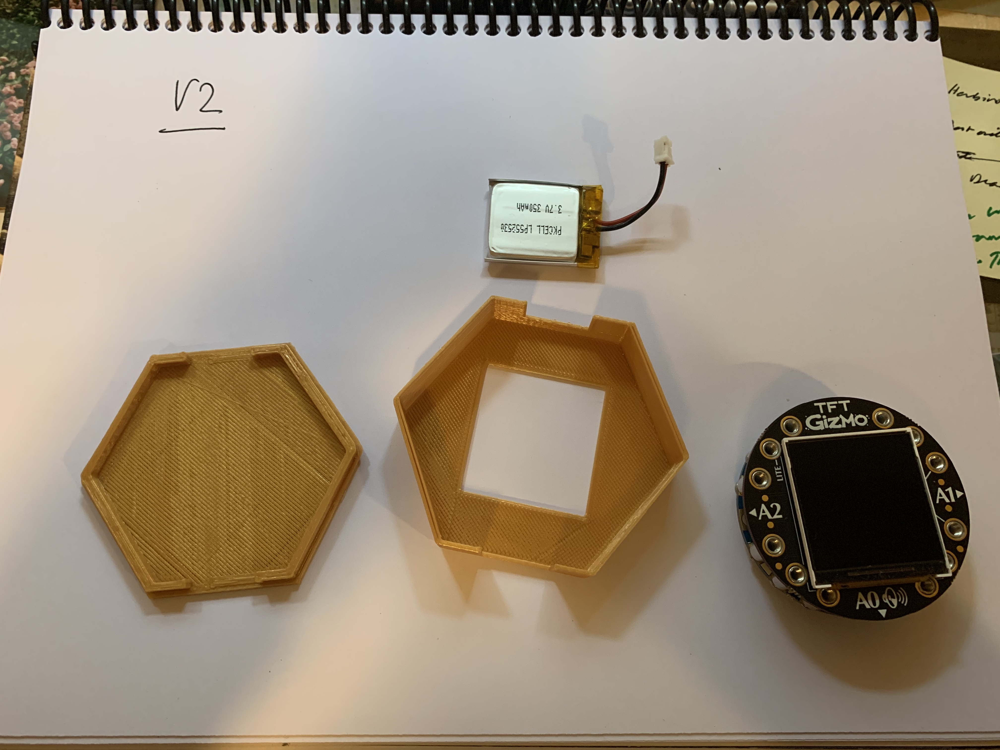
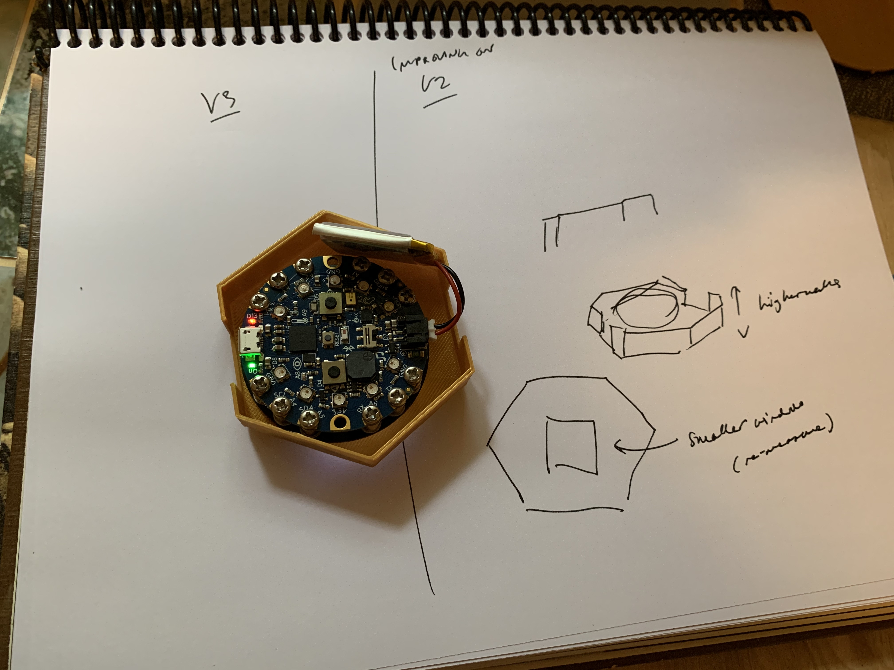
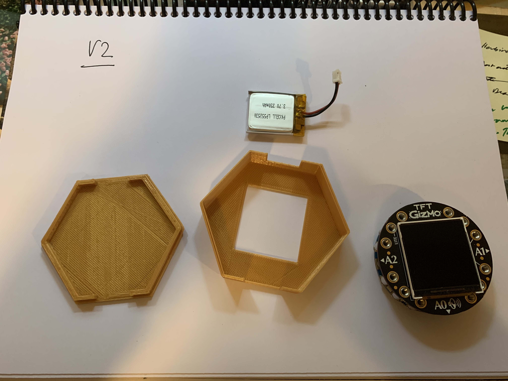
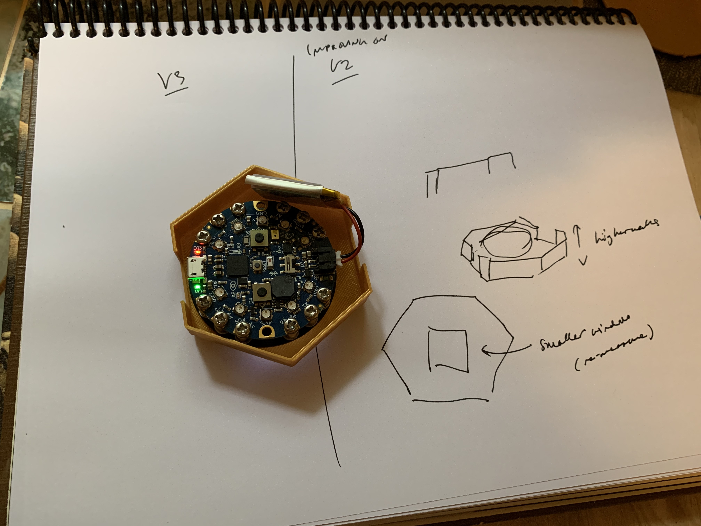
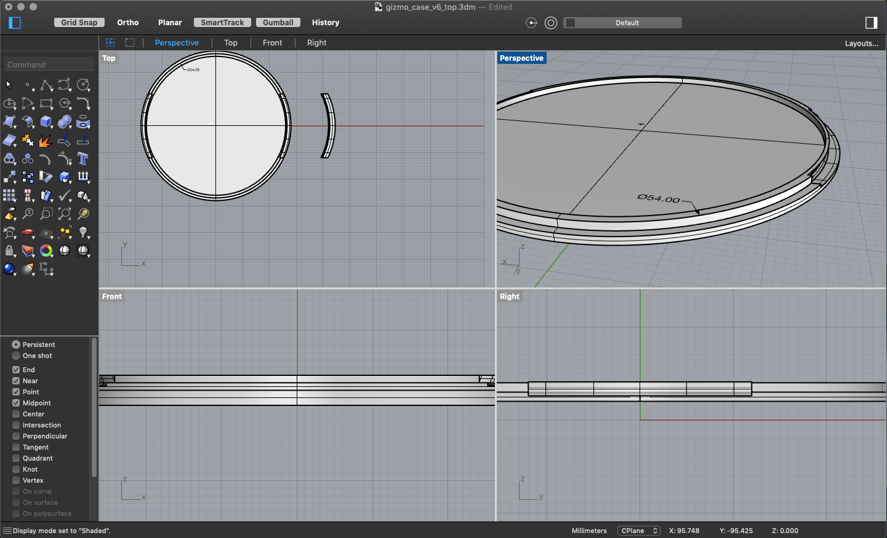
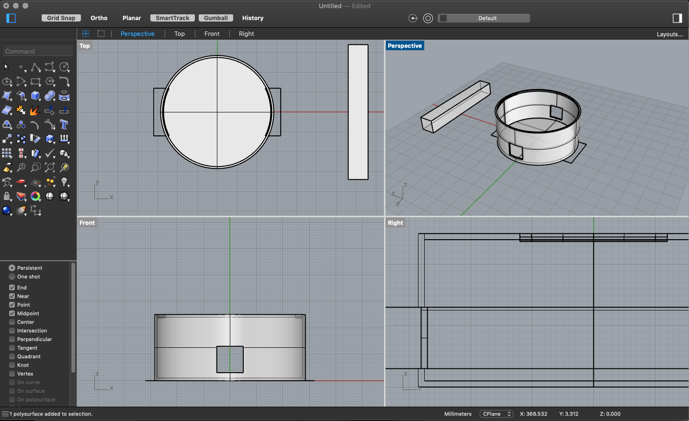
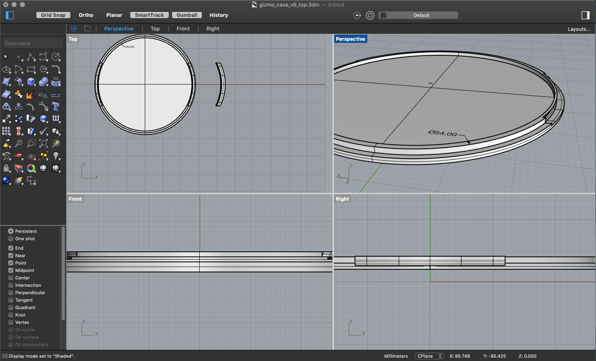
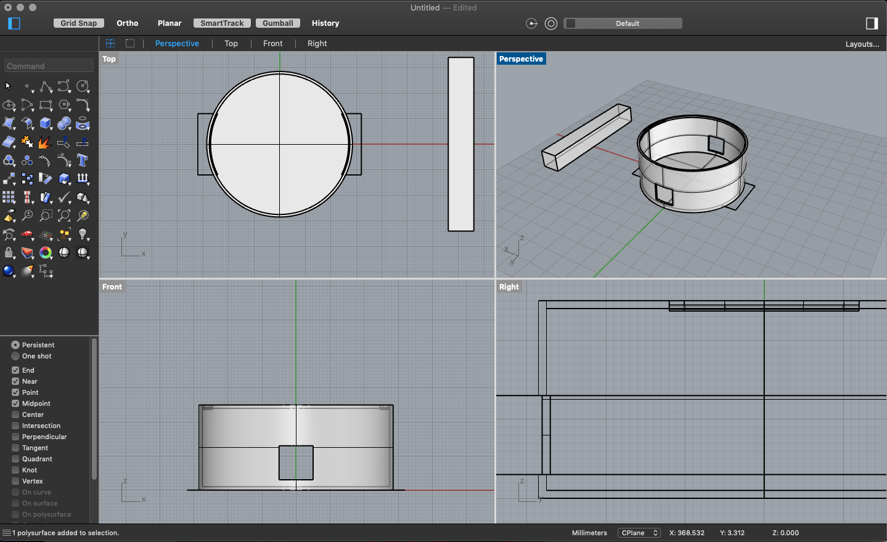

Gabrielle's Final Project
Concept: Body poetry

I discovered poetry when I was 17 or 18, with T.S. Eliot. The love was instant.
I was still learning English at the time and I was fascinated by the rhythms,
sounds and images the language could produce. It's been a passion of mine ever since.
Like maths, jazz or Rhino, poetry doesn't give itself easily but the pleasure
comes from the work you put into it.
I've been playing with text generating RNN for the past 6 months and want
to create a piece that incorporates some of that work with the tactility and
physicality of a 3D printed piece. The idea is to create a wearable that features
a light ML system running on a tiny MCU equipped with accelerometers. I would
train it to recognize certain gestures and map them to specific voice outputs. That
way that you could compose poems by moving.
For the final project, I will focus mostly on the shell.


There are a few boards out there that fit the bill. The Sparkfun Edge Board is one. Arduino also makes one,
and so does Adafruit, which is the one I have (see above).


My plan is to design a bracelet in Rhino and print it. It'll have to be sturdy enough for dancing without breaking or falling and also accomodate the board's ports, lights and LCD screen.
Plan
1. Take my board measurements --> May 22
2. Design my bracelet in Rhino --> May 23-25
3. Export STL, slice and print --> May 25
4. Test and adjust --> May 26
BoM
1. Circuit Playground TFT Gizmo - CHECK
2. Rhino software - CHECK
3. 3D printer + filament - CHECK
4. Calipers - CHECK
Production: making a case

This project was mostly about trying to make a case for my board. That was
difficult! But even though it's probably my least successful project in this class,
it's been one of the most informatives because it required understanding the
mechanics of case-making instead of focusing on technique. I made many different
versions and each one thought me something. I eventually pivoted to making a mold,
which I'm in the process of building.


V1 was fairly rudimentary: 2 discs with clips to hold them together, with the board sandwiched between them. Needless to say: not sturdy.

 

For V2 and V3 I went for a different form factor, following
the example of a case I saw on Adafruit's website. But the lid didn't fit and
the board was too loose in the case. I tried to address these issues in V3 by
resizing and adding little stabilizing rods inside the case. But the top still
didn't fit.

I printed a V3 ALT by tweaking Adafruit's case. It taught me
that a round form factor would work better and that the lid would securely fit
to the case with little snaps.


 

V4, V5, V6, V7 and V8 were all variations of the same idea:
adding little snaps to the lid and to the case so that they would securely fit
together. My calculations were always a few milimeters off however, and even
though the board was snug in its case, I didn't manage to print a lid that fit.
The fact that my 3D printer's bed wasn't leveled didn't help, despite my efforts
to level it.
Looking for inspiration on the internets, I saw the Adafruit's wearable case
and thought that silicon might be the way. So now, on to mold making!


I sketched my mold and designed it in Rhino and then printed it. I mized way
too much OOMOO so I improvised molds with extra plastic cups and some of the
previous cases I had printed.


The improvised molds turned out to be the most successful! The walls of the
main cast were too thin and ripped when I tried to extract the case out of the
mold (last picture). The other molds were okay-ish but not exactly what I
need for my project.
Next steps

A two-part mold!